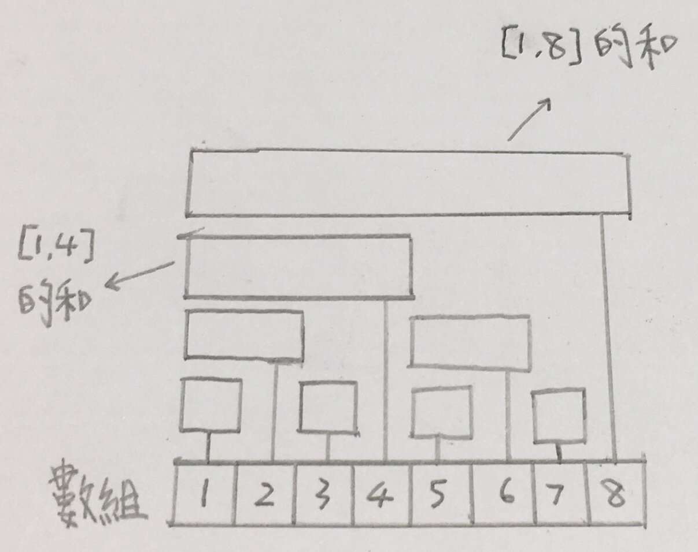

樹狀數組 / Binary Index Tree
樸素的樹狀數組支援兩種操作，複雜度皆為O(logn)：
- 區間查詢：查詢區間內元素的和
- 單點修改：更改單個元素的值
討論樹狀數組前，考慮若用一般的方法實現上述功能，複雜度如何：
- 構想一：直接模擬
- 區間查詢：掃一遍修改，O(n)
- 單點修改：直接修改，O(1)
- 構想二：前綴和
- 區間查詢：查詢區間[l,r]，可直接pre[r]−pre[l−1]求和，O(1)
- 單點修改：修改同時，須更新前綴和，O(n)
由於演算法的複雜度取決於最慢一環，所以上述兩種方法都會被O(n)的操作大大拖累，因此我們希望兩種操作都不能太慢完成。
在此前提下，不難想像我們必須透過維護多個小區間區間來提升效率，而樹狀數組恰好利用了二進制的性質。
樹狀數組建立一個長度為n的數組，並讓a[i]代表區間[i−lowbit(i)+1,i]的和。
舉例而言：
- a[14]=a[(1110)0]=sum of [13,14]
- 將14換為二進制後，其lowbit（最低位）為2，因此代表右端點14，長度2的區間和
理解數組意義後，我們可以簡單地畫出數組涵蓋範圍的圖形。

上圖為長度為8的樹狀數組，現在分別考慮我們需要的兩種操作可分別如何利用此資料結構。
- 區間查詢：
- 若要查詢[l,r]的和，可改為查詢[1,r]的和減去[1,l−1]的和
- 前綴和可輕易透過數組求得，例如：
sum of [1,7]=a[7]+a[6]+a[4]
- 觀察可知，前綴和所加的項彼此恰好不重疊，因此數組每個項長度為lowbit(i)，前一個不重疊的項為i−lowbit(i)，延續前例：
6=7−lowbit[7]
4=6−lowbit[6]
0=4−lowbit[0]
- 單點更新：
- 與區間查詢類似，不過區間查詢是由右至左累加，而單點更新是向右更新，例如若將第三個點加一，則：
a[3]=a[3]+1
a[4]=a[4]+1
a[8]=a[8]+1
概念至此應該算是講完了，以下將附上代碼模板。
- tree為樹狀數組資料結構的數組，a為原數組
int tree[MAXN], a[MAXN]
- 區間查詢
int query(int cur) {
int ret = 0;
while (cur > 0) {
ret += tree[cur];
cur -= lowBit(cur);
}
return ret;
}
- 單點更新
void update(int cur, int addValue, int capacity) {
a[cur] += addValue;
while (cur <= capacity) {
tree[cur] += addValue;
cur += lowBit(cur);
}
}
樹狀數組還可以做其他變形，如區間極值，變形如下。
- 區間搜索：極值無法用前綴和運算，因此由r開始，考慮需要考慮的區間，但右端點小於l結束
- 單點更新：由於更新後不一定影響區間極值，因此要掃一遍涵蓋的區間